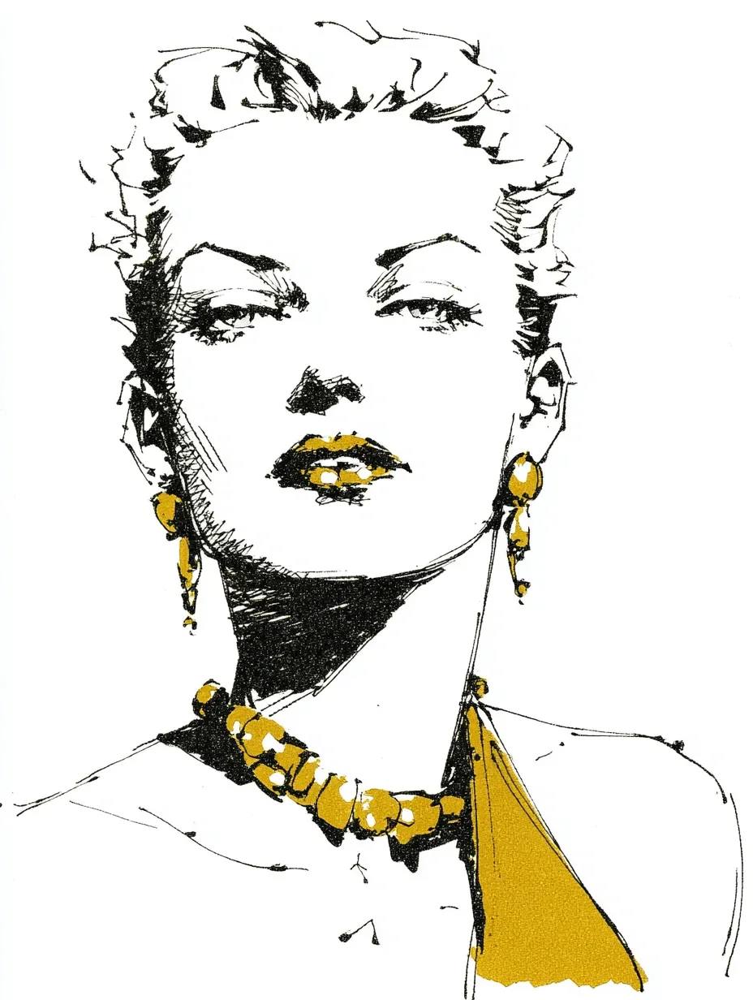

술집은 가구들마저 긴장하게 만드는 방식으로 고요했다.
[The bar was quiet in the way that makes furniture nervous.]
나는 그만한 수고를 받을 자격도 없는 잔을 닦고 있었는데, 그녀가 이미 내려진 판결처럼 의자에 자리를 잡았다. 그녀의 얼굴은 성숙해졌다기보다 야위어 보였다. 잉크로 그은 선들. 빛을 받으며 마치 제 의견이라도 있는 듯 반짝이는 금빛 입. 목에 걸린 장신구는 무겁고도 인내심 있게 놓여 있었다. 그건 밤이 얼마나 오래 가는지 알고 있었다.
[I was polishing a glass that did not deserve the effort when she settled onto the stool like a verdict already reached. Her face looked drawn instead of grown. Ink lines. Gold mouth catching the light as if it had opinions. The jewelry at her throat sat heavy and patient. It knew how long nights lasted.]
나는 바텐더가 늘 하듯 했다. 보지 않는 척하면서도 모든 걸 보고 있었다. 방은 그녀를 중심으로 다시 맞춰졌다. 웃음은 예의를 배웠고, 연기는 등을 곧추세웠다.
[I did what bartenders do. I pretended not to look while seeing everything. The room adjusted around her. Laughter learned manners. Smoke straightened its spine.]
그녀는 눈 한번 깜빡이지 않고 마셨다. 갈증 때문이 아니었다. 목적이 있었다. 마치 그 술이 그녀에게 빚이라도 진 것처럼.
[She drank without blinking. Not thirsty. Purposeful. Like the drink owed her money.]
한 남자가 슬쩍 다가왔다. 남자들은 늘 그렇게 슬쩍 다가온다. 그는 낙천주의와 애프터셰이브 냄새가 났다. 나중에 분명 후회하게 될 만큼 자신만만한 말을 하나 던졌다. 나는 듣지 못했다. 그게 중요했다.
[A man drifted over. They always drift. He smelled like optimism and aftershave. He said something confident enough to regret later. I did not hear it. That mattered.]
그녀가 몸을 기울였다. 아주 조금. 입술이 한 번 움직였다. 어떤 소리도 바까지 닿지 않았다. 그녀가 그에게 건넨 것은 공기보다 가벼웠고, 그 두 배로 무거웠다.
[She leaned in. Barely. Her lips moved once. No sound reached the bar. Whatever she gave him was lighter than air and twice as heavy.]
남자는 고개를 끄덕였다. 미소 지었다. 그리고 균형이 그를 두고 먼저 떠났다. 그는 마치 의자가 ‘아, 나 피곤했지’ 하고 기억해낸 것처럼 쓰러졌다. 방 안은 원래부터 그랬던 척했다.
[The man nodded. Smiled. Then his balance stepped away from him. He fell like a chair remembering it was tired. The room pretended it had always been that way.]
나는 한숨을 쉬고, ‘그라는 개념’에게 한 잔을 따라줬다. 바닥은 언젠가 사람을 끌어당긴다. 그게 바닥의 본성이다.
[I sighed and poured a drink for the idea of him. Floors attract people eventually. It is their nature.]
그녀는 정성스럽게 접어둔 지폐로 계산했다. 어릴 때 배우거나 너무 늦게 깨닫게 되는 종류의 정성. 그녀의 손가락이 내 손을 스쳤다. 따뜻했다. 짧았다. 교육적이었다.
[She paid in a bill folded with care. The kind of care you learn young or too late. Her fingers brushed mine. Warm. Brief. Educational.]
사람들은 바텐딩이 술에 관한 일이라고 생각한다. 사실은 각도에 관한 일이다. 누가 기울고, 누가 듣고, 누가 말하지 말아야 할 때를 아는지. 욕망은 소리가 있다. 권력은 없다. 권력은 네가 더 가까이 기울 때까지 기다린다.
[People think bartending is about alcohol. It is about angles. Who leans. Who listens. Who knows when not to speak. Desire has a sound. Power does not. It waits until you lean closer.]
그녀가 일어섰다. 금빛이 다시 한 번 빛을 물었다. 문은 누구도 묻지 않은 질문에 대한 대답처럼 열렸다.
[She stood. The gold caught again. The door opened like an answer no one had asked.]
그녀가 떠난 뒤 거울은 스스로를 설명하려 들었다. 나는 무시했다. 나는 깨진 유리 조각을 쓸었다. 늘 그렇듯.
[After she left the mirror tried to explain itself. I ignored it. I swept the glass. I always do.]
그게 일이다. 따르고. 지켜보고. 나중에 웃는다. 나중이 온다면.
[That is the work. Pour. Watch. Laugh later. If later shows up.]